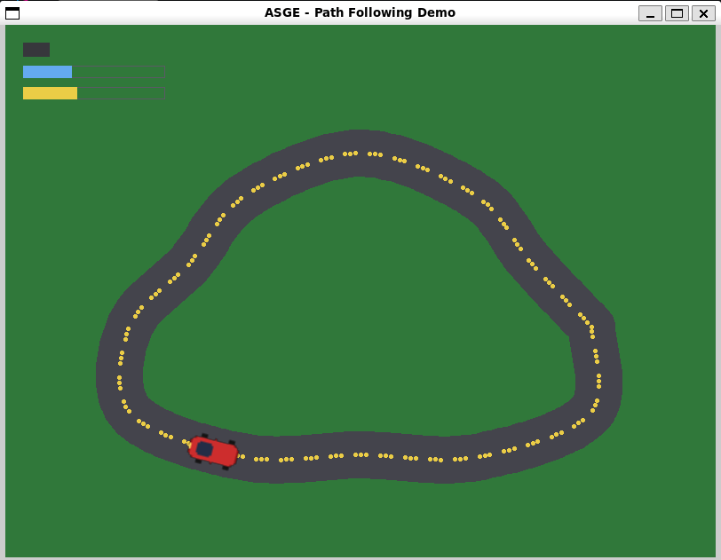

Path Following
A car driving a closed, curved street
End-to-end showcase for components::PathFollow and systems::PathFollowingSystem: a car drives a closed, curved street loop built from math::CatmullRomSpline — 13 waypoints (the first repeated at the end, since a Catmull-Rom chain doesn't wrap on its own) resolved once at spawn time, then walked every frame at a player-adjustable speed, with the car oriented to face the road's tangent direction as it turns.
The street itself is drawn straight from the car's own resolved PathFollow::m_Path — IRenderer has no curve/polygon-fill primitive, so it's painted as a dense trail of overlapping filled circles (via PointAtDistance) with a dashed centerline, rather than needing a second, separately-authored road asset.
Controls
- UP / DOWN Adjust speed while held
- SPACE Pause/resume
- R Reset to the start of the loop

Run it yourself
cmake --build --preset windows-debug --target path_following_demo
# binary lands under bin/ (e.g. bin/Debug/path_following_demo.exe on Windows)See Installation for the full build setup.
Source
#pragma once
#include <ASGE/ASGE.hpp>
/**
* @brief A car (Sprite + components::PathFollow) driving a closed, curved
* street loop -- the end-to-end showcase for PathFollow/
* PathFollowingSystem: waypoints resolved once into a
* math::CatmullRomSpline at spawn time, then walked every frame at a
* player-adjustable speed via systems::PathFollowingSystem, wrapping
* back to the start on every lap.
*
* The street itself is drawn straight from the car's own resolved
* PathFollow::m_Path -- IRenderer has no curve/polygon-fill primitive, so
* RenderRoad() paints it as a dense trail of overlapping filled circles
* with a dashed centerline. UP/DOWN adjust the car's speed while held,
* SPACE pauses/resumes, R resets it to the start of the loop.
*/
class PathFollowingDemoState final : public asge::game::state::IGameState<int>
{
asge::ecs::Registry& m_Registry;
asge::game::asset::AssetManager& m_Assets;
asge::ecs::Entity m_Car{ asge::ecs::Entity::Null() };
float m_Speed{ 0.0f }; // current units/second, UP/DOWN-adjustable -- set to kBaseSpeed by Reset()
unsigned m_Laps{ 0 };
bool m_Paused{ false };
void SpawnCar(asge::video::IRenderer& inRenderer);
void UpdateCar(float inDeltaTime);
void RecenterCarSprite();
void Reset();
void RenderRoad(asge::video::IRenderer& inRenderer) const;
void RenderHud(asge::video::IRenderer& inRenderer) const;
public:
PathFollowingDemoState(asge::ecs::Registry& inRegistry, asge::game::asset::AssetManager& inAssets,
asge::video::IRenderer& inRenderer);
[[nodiscard]] std::optional<asge::game::state::Transition<int>>
Update(float inDeltaTime, asge::input::InputState const& inInput) override;
void Render(asge::video::IRenderer& inRenderer) override;
void OnSystemEvent(asge::event::SystemEvent const& inSysEvent) override;
};
class PathFollowingDemoGame final : public asge::game::Game<int>
{
public:
explicit PathFollowingDemoGame(asge::video::IRenderer& inRenderer, asge::audio::AudioDevice& inAudioDev);
protected:
[[nodiscard]] std::unique_ptr<StateType> CreateState(int inId) override;
};
#include "Game.hpp"
#include <algorithm>
namespace
{
using asge::input::Keycode;
using asge::math::Float2;
using asge::math::Int2;
using asge::math::Rect;
using asge::media::RGBA_Color;
using asge::game::components::PathFollow;
using asge::game::components::Sprite;
using asge::game::components::Transform;
constexpr char const* kCarTexturePath = "textures/car.png";
constexpr float kCarNativeW = 32.0f; // car.png's own pixel size
constexpr float kCarNativeH = 20.0f;
constexpr float kCarScale = 2.25f;
constexpr float kCarHalfW = ( kCarNativeW * kCarScale ) * 0.5f;
constexpr float kCarHalfH = ( kCarNativeH * kCarScale ) * 0.5f;
constexpr float kBaseSpeed = 170.0f; // units/second
constexpr float kMinSpeed = 40.0f;
constexpr float kMaxSpeed = 420.0f;
constexpr float kAccel = 160.0f; // units/second^2 while UP/DOWN is held
constexpr float kRoadHalfWidth = 26.0f;
constexpr float kRoadSampleStep = 6.0f; // arc-length spacing between road/dash "paint" dabs
constexpr float kDashOn = 14.0f;
constexpr float kDashOff = 14.0f;
constexpr RGBA_Color kRoadColor{ 68, 68, 76, 255 };
constexpr RGBA_Color kDashColor{ 235, 205, 70, 255 };
constexpr RGBA_Color kGrassColor{ 48, 120, 58, 255 };
}
PathFollowingDemoState::PathFollowingDemoState(
asge::ecs::Registry& inRegistry, asge::game::asset::AssetManager& inAssets,
asge::video::IRenderer& inRenderer
)
: m_Registry(inRegistry), m_Assets(inAssets)
{
SpawnCar(inRenderer);
}
void PathFollowingDemoState::SpawnCar(asge::video::IRenderer& inRenderer)
{
auto entity = m_Registry.CreateEntity();
if ( !entity ) { entity.LogError(); return; }
m_Car = entity.Value();
m_Registry.AddComponent<Transform>( m_Car, Transform{ .m_ScaleX = kCarScale, .m_ScaleY = kCarScale } );
// m_Texture stays null until ResolveAssets below.
m_Registry.AddComponent<Sprite>( m_Car, Sprite{ .m_VirtualPath = kCarTexturePath } );
PathFollow pathFollow;
pathFollow.m_Waypoints = {
{ 660.0f, 340.0f }, { 658.7f, 437.7f }, { 530.0f, 487.2f }, { 400.0f, 484.7f },
{ 270.0f, 487.2f }, { 141.3f, 437.7f }, { 140.0f, 340.0f }, { 208.3f, 267.7f },
{ 270.0f, 192.8f }, { 400.0f, 144.7f }, { 530.0f, 192.8f }, { 591.7f, 267.7f },
{ 660.0f, 340.0f }, // repeats the first point -- a Catmull-Rom chain
// doesn't wrap on its own (m_Loop only wraps
// m_Traveled), so closing the loop needs the
// start point stitched back on as the last one.
};
pathFollow.m_Loop = true;
m_Registry.AddComponent<PathFollow>( m_Car, pathFollow );
// Resolved once, right here at spawn time -- this demo's equivalent of
// Game::LoadScene()'s one-time ResolveAssets call, not something to
// repeat every frame (see AssetManager::ResolveAssets' own doc comment).
m_Assets.ResolveAssets( m_Registry, inRenderer );
Reset();
}
void PathFollowingDemoState::RecenterCarSprite()
{
auto transformResult = m_Registry.GetComponent<Transform>( m_Car );
if ( !transformResult ) return;
// RenderSystem/PathFollowingSystem both treat Transform's position as
// the sprite's top-left corner, but PathFollowingSystem just wrote the
// spline point itself into it -- shift by the car's own half-extent so
// it's the sprite's center (and so its rotation pivot) that rides the
// road, not its corner.
auto& t = transformResult.Value().get();
t.m_X -= kCarHalfW;
t.m_Y -= kCarHalfH;
}
void PathFollowingDemoState::UpdateCar(float inDeltaTime)
{
auto pathResult = m_Registry.GetComponent<PathFollow>( m_Car );
if ( !pathResult ) return;
pathResult.Value().get().m_Speed = m_Speed;
if ( m_Paused ) return;
float const before = pathResult.Value().get().m_Traveled;
asge::game::systems::PathFollowingSystem( m_Registry, inDeltaTime );
// Re-fetched rather than reusing pathResult's reference across the call
// above -- PathFollowingSystem doesn't add/remove components, but this
// matches how the engine's own tests treat a Registry mutation as
// invalidating a previously-held reference.
auto afterResult = m_Registry.GetComponent<PathFollow>( m_Car );
if ( afterResult && afterResult.Value().get().m_Traveled < before )
{
++m_Laps; // wrapped back past the finish line
}
RecenterCarSprite();
}
void PathFollowingDemoState::Reset()
{
m_Paused = false;
m_Speed = kBaseSpeed;
m_Laps = 0;
auto pathResult = m_Registry.GetComponent<PathFollow>( m_Car );
if ( !pathResult ) return;
auto& path = pathResult.Value().get();
path.m_Speed = m_Speed;
path.m_Traveled = 0.0f;
path.m_Finished = false;
if ( path.m_Path.HasSegments() )
{
auto const pos = path.m_Path.PointAtDistance( 0.0f );
if ( auto transformResult = m_Registry.GetComponent<Transform>( m_Car ) )
{
transformResult.Value().get().m_X = pos.x();
transformResult.Value().get().m_Y = pos.y();
transformResult.Value().get().m_Rotation = 0.0f; // the next PathFollowingSystem tick recomputes this properly
}
RecenterCarSprite();
}
}
void PathFollowingDemoState::RenderRoad(asge::video::IRenderer& inRenderer) const
{
auto pathResult = m_Registry.GetComponent<PathFollow>( m_Car );
if ( !pathResult ) return;
auto const& path = pathResult.Value().get().m_Path;
float const length = path.Length();
if ( length <= 0.0f ) return;
// IRenderer has no curve/polygon-fill primitive, so the road surface is
// just a dense trail of overlapping filled circles walked along the
// spline's own arc length via PointAtDistance.
for ( float d = 0.0f; d <= length; d += kRoadSampleStep )
{
auto const p = path.PointAtDistance( d );
inRenderer.DrawCircle(
Int2{ static_cast<int>(p.x()), static_cast<int>(p.y()) },
static_cast<int>(kRoadHalfWidth), kRoadColor, true );
}
// Dashed centerline: alternates a dash's worth of small dots with a gap.
for ( float cursor = 0.0f; cursor <= length; cursor += kDashOn + kDashOff )
{
float const dashEnd = std::min( cursor + kDashOn, length );
for ( float d = cursor; d < dashEnd; d += kRoadSampleStep )
{
auto const p = path.PointAtDistance( d );
inRenderer.DrawCircle(
Int2{ static_cast<int>(p.x()), static_cast<int>(p.y()) }, 2, kDashColor, true );
}
}
}
void PathFollowingDemoState::RenderHud(asge::video::IRenderer& inRenderer) const
{
// "PAUSED" indicator (top-left).
inRenderer.DrawRect(
Rect{ 20.0f, 20.0f, 30.0f, 16.0f },
m_Paused ? RGBA_Color{ 240, 120, 60, 255 } : RGBA_Color{ 55, 55, 60, 255 },
true );
// Speed bar.
Rect const speedTrack{ 20.0f, 46.0f, 160.0f, 14.0f };
inRenderer.DrawRect( speedTrack, RGBA_Color{ 90, 90, 100, 255 }, false );
float const speedFrac = std::clamp( (m_Speed - kMinSpeed) / (kMaxSpeed - kMinSpeed), 0.0f, 1.0f );
inRenderer.DrawRect(
Rect{ speedTrack.m_X, speedTrack.m_Y, speedTrack.m_Width * speedFrac, speedTrack.m_Height },
RGBA_Color{ 100, 170, 240, 255 }, true );
// Current-lap progress bar.
Rect const lapTrack{ 20.0f, 70.0f, 160.0f, 14.0f };
inRenderer.DrawRect( lapTrack, RGBA_Color{ 90, 90, 100, 255 }, false );
float lapFrac = 0.0f;
if ( auto pathResult = m_Registry.GetComponent<PathFollow>( m_Car ) )
{
auto const& path = pathResult.Value().get();
float const length = path.m_Path.Length();
if ( length > 0.0f ) lapFrac = path.m_Traveled / length;
}
inRenderer.DrawRect(
Rect{ lapTrack.m_X, lapTrack.m_Y, lapTrack.m_Width * lapFrac, lapTrack.m_Height },
RGBA_Color{ 235, 205, 70, 255 }, true );
// One small filled square per completed lap, capped so a long session
// doesn't run the row off-screen.
constexpr unsigned kMaxPips = 12;
unsigned const pips = std::min( m_Laps, kMaxPips );
for ( unsigned ii = 0; ii < pips; ++ii )
{
inRenderer.DrawRect(
Rect{ 20.0f + static_cast<float>(ii) * 14.0f, 94.0f, 10.0f, 10.0f },
RGBA_Color{ 235, 205, 70, 255 }, true );
}
}
std::optional<asge::game::state::Transition<int>>
PathFollowingDemoState::Update(float inDeltaTime, asge::input::InputState const& inInput)
{
if ( inInput.IsKeyDown( Keycode::UP ) ) m_Speed = std::min( m_Speed + kAccel * inDeltaTime, kMaxSpeed );
if ( inInput.IsKeyDown( Keycode::DOWN ) ) m_Speed = std::max( m_Speed - kAccel * inDeltaTime, kMinSpeed );
UpdateCar( inDeltaTime );
return std::nullopt;
}
void PathFollowingDemoState::Render(asge::video::IRenderer& inRenderer)
{
inRenderer.Clear( kGrassColor );
RenderRoad( inRenderer );
// Car's Sprite::m_Texture/PathFollow::m_Path were both already resolved
// once at spawn time (see SpawnCar) -- this is just CameraSystem
// (a no-op, no ActiveCamera set here) followed by RenderSystem's draw;
// no Animation component exists in this demo, so the deltaTime AnimationSystem
// would consume is irrelevant.
asge::game::systems::RenderPipeline( m_Registry, inRenderer, 0.0f );
RenderHud( inRenderer );
}
void PathFollowingDemoState::OnSystemEvent(asge::event::SystemEvent const& inSysEvent)
{
auto const* keyEvent = inSysEvent.TryGet<asge::event::KeyboardEvent>();
if ( !keyEvent ) return;
if ( keyEvent->s_Type != asge::event::EventType::KEYBOARD_KEY_PRESSED ) return;
if ( keyEvent->s_Repeat ) return; // edge-triggered: one toggle per physical press
if ( keyEvent->s_Keycode == Keycode::SPACE ) m_Paused = !m_Paused;
else if ( keyEvent->s_Keycode == Keycode::R ) Reset();
}
PathFollowingDemoGame::PathFollowingDemoGame(asge::video::IRenderer& inRenderer, asge::audio::AudioDevice& inAudioDev)
: Game(inRenderer, inAudioDev)
{
// ASGE_PATH_FOLLOWING_DEMO_ASSET_DIR is injected by CMakeLists.txt.
auto mountResult = m_Vfs.Mount("textures", ASGE_PATH_FOLLOWING_DEMO_ASSET_DIR);
if ( !mountResult ) mountResult.LogError();
SetInitialState(0);
}
std::unique_ptr<PathFollowingDemoGame::StateType> PathFollowingDemoGame::CreateState([[maybe_unused]] int inId)
{
return std::make_unique<PathFollowingDemoState>( m_SceneManager.GetRegistry(), m_Assets, m_Renderer );
}